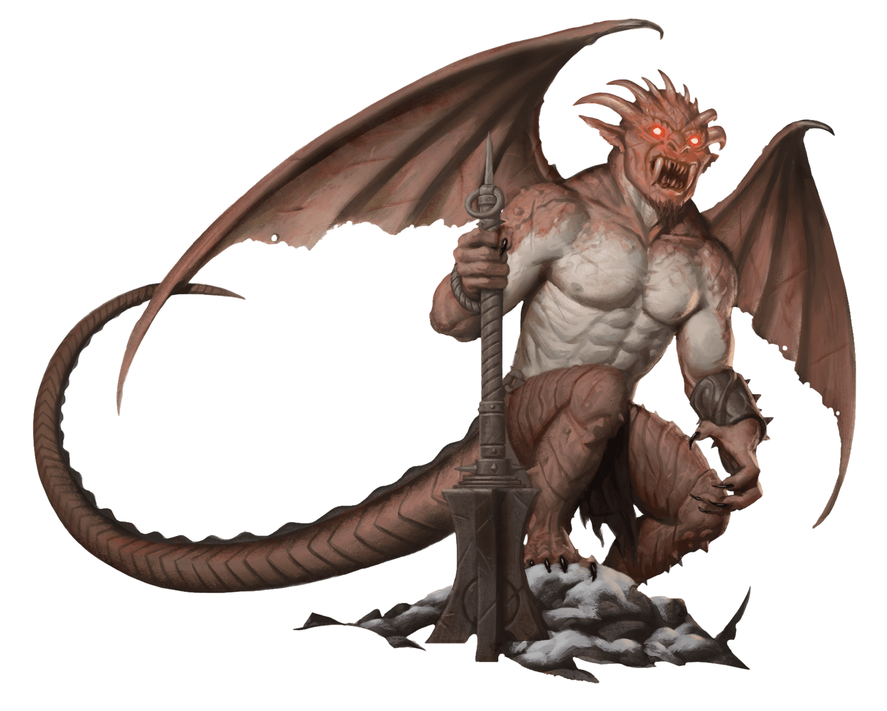

Hutijin
Politics in the Nine Hells are anything but predictable. Alliances form all the time, but most wind up unraveling due to treachery. Nevertheless, for all their backbiting and betrayal, devils do occasionally display loyalty, offering unwavering service to their masters. One such example is Hutijin, a duke of Cania and loyal servant of Mephistopheles.

Across the Hells, Hutijin's name fills lesser devils with fear and loathing, for this duke commands two companies of pit fiends. With such soldiers under his command, Hutijin can easily crush any rival who gets in his way while also defending Mephistopheles against armies seeking to contest his dominion. Hutijin has amassed enough power to challenge the lord of Cania, but he has never wavered in his support for his master--suggesting, perhaps, that Mephistopheles has some hold over him.
Outside the Nine Hells, Hutijin is a relatively obscure figure, known only to the most learned infernal scholars. He has no cults of his own, and his servants are few in number. The reason is simple: Hutijin hates mortals. When summoned from the Hells, he repays the instigator with a long and agonizing death.
Mephistopheles forbids Hutijin from making too many forays into the Material Plane, since the duke's absence leaves him vulnerable to his rivals. Other archdevils know how much Hutijin despises mortals and have secretly disseminated the means to call him from the Nine Hells in the hope of distracting the archdevil long enough for them to assail Mephistopheles. Hutijin sends devils into the Material Plane to eradicate mention of his name and destroy those who have learned of him, but the summonings still occur. When called from his post, he negotiates as quickly as he can, usually closing a deal with little cost to the summoner. However, once the deal has been fulfilled, Hutijin repays the interruption with death.
Hutijin
Large Fiend (Devil Prince), Lawful Evil
- Armor Class 19 (natural armor)
- Hit Points 200 (16d10 + 112)
- Speed 30 ft., fly 60 ft.
STR DEX CON INT WIS CHA 27 (+8) 15 (+2) 25 (+7) 23 (+6) 19 (+4) 25 (+7)
- Proficiency Bonus +7
- Saving Throws Dex +9,Con +14,Wis +11
- Damage Vulnerabilities
- Damage Resistances cold; bludgeoning,piercing,and slashing from nonmagical attacks that aren't silvered
- Damage Immunities fire,poison
- Condition Immunities charmed,exhaustion,frightened,poisoned
- Skills Intimidation +14,Perception +11
- Senses truesight 120 ft.,passive Perception 21
- Languages all,telepathy 120 ft.
- Challenge 21
Infernal Despair. Each creature within 30 feet of Hutijin that isn't a devil makes saving throws with disadvantage.
Legendary Resistance (3/Day). If Hutijin fails a saving throw, he can choose to succeed instead.
Magic Resistance. Hutijin has advantage on saving throws against spells and other magical effects.
Regeneration. Hutijin regains 20 hit points at the start of his turn. If he takes radiant damage, this trait doesn't function at the start of his next turn. Hutijin dies only if he starts his turn with 0 hit points and doesn't regenerate.
Actions
Multiattack. Hutijin makes one Bite attack, one Claw attack, one Mace attack, and one Tail attack.
Bite. Melee Weapon Attack: +15 to hit, reach 5 ft., one target. Hit: 15 (2d6 + 8) fire damage. The target must succeed on a DC 22 Constitution saving throw or become poisoned. While poisoned in this way, the target can't regain hit points, and it takes 10 (3d6) poison damage at the start of each of its turns. The poisoned target can repeat the saving throw at the end of each of its turns, ending the effect on itself on a success.
Claw. Melee Weapon Attack: +15 to hit, reach 10 ft., one target. Hit: 17 (2d8 + 8) cold damage.
Mace. Melee Weapon Attack: +15 to hit, reach 5 ft., one target. Hit: 15 (2d6 + 8) force damage.
Tail. Melee Weapon Attack: +15 to hit, reach 10 ft., one target. Hit: 19 (2d10 + 8) thunder damage.
Spellcasting. Hutijin casts one of the following spells, requiring no material components and using Charisma as the spellcasting ability (spell save DC 22):
At will: alter self (can become Medium when changing his appearance), detect magic, hold monster, invisibility (self only), lightning bolt, suggestion, wall of fire
3/day: dispel magic
Teleport. Hutijin teleports, along with any equipment he is wearing and carrying, up to 120 feet to an unoccupied space he can see.
Reactions
Fearful Voice (Recharge 5-6). In response to taking damage, Hutijin utters a dreadful word of power. Each creature within 30 feet of him that isn't a devil must succeed on a DC 22 Wisdom saving throw or become frightened of him for 1 minute. A creature can repeat the saving throw at the end of each of its turns, ending the effect on itself on a success. A creature that saves against this effect is immune to his Fearful Voice for 24 hours.
Legendary Actions
Hutijin can take 3 legendary actions, choosing from the options below. Only one legendary action option can be used at a time and only at the end of another creature's turn. Hutijin regains spent legendary actions at the start of his turn.
Attack. Hutijin makes one Claw, Mace, or Tail attack.
Teleport. Hutijin uses Teleport.
Lightning Storm (Costs 2 Actions). Hutijin releases lightning in a 30-foot radius, blocked only by total cover. All other creatures in that area must each make a DC 22 Dexterity saving throw, taking 18 (4d8) lightning damage on a failed save, or half as much damage on a successful one.